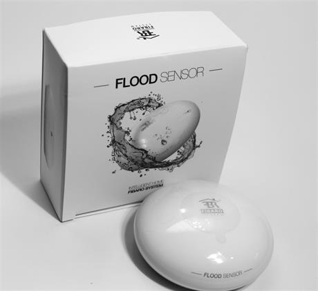
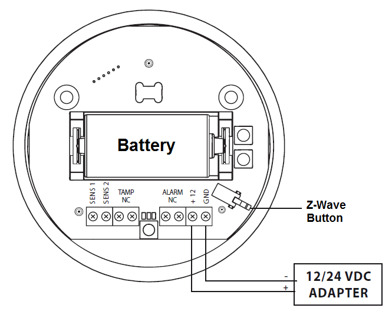

FIBARO flood sensor¶

Brief information¶
- Compatible with any Z-Wave or Z-Wave+ Controller
- Supports protected mode (Z-Wave network security mode) with AES-128 encryption
- May be connected to any alarm system (potential free output terminal)
- Extremely easy installation - simply put on a surface prone to flooding
- May be installed anywhere - flood sensor’s contacts extended with a wire
- Battery or VDC powered. When connected to an external, VDC power source, the battery serves as an emergency power source
- Theft protection - tilt is reported to the Z-Wave network or alarm system’s main controller
- Two operating modes - flood/temperature sensor or just a temperature sensor.
- Alarm is signalled by sound, visual indicator (LED diode) and Z-Wave
How to add to VENUS app¶

- 1. Activation
- Press “Add button” (button ‘+’) in app
- Turn the cover counter-clockwise and open it
- Remove the battery blocker
- Flood Sensor will confirm being powered with a short beep
- Wait for VENUS scan & detect this device and inform in app
- 2. Adding/Removing
- Press “Add button” (button ‘+’) in app
- Turn the cover counter-clockwise and open it
- 3 times quick press TMP button (Z-Wave button)
- Wait for VENUS scan & detect this device and inform in app
How to add/remove associated device(s) to¶
This device supports 1 association group with 5 nodes.
To add associated device(s) to this device, below action is required:
- Add z-wave notified-devices (which will be associated to this sensor) to VENUS
- Select Associate button and then select notified-device(s) to add
- Wake-up this sensor: 3 times quick press TMP button (Z-Wave button)
- If successful, pop-up notification displays in VENUS app
To remove associated device(s) from this sensor, below action is required:
- Select Associate button and then select notified-device(s) to remove
- Wake-up this sensor: 3 times quick press TMP button (Z-Wave button)
- If successful, pop-up notification displays in VENUS app
Button action and events¶
- 1 press: select desired MENU option (in case MENU mode is active)
- 3 presses: add/remove or wake up
- Press and holding: enter the MENU mode (confirmed by visual indicator)
Factory reset¶
Resetting the Flood Sensor: Reset procedure deletes EEPROM’s memory, including all information on the Z-Wave network and the main controller.
- Make sure the Sensor is powered
- Press and hold the TMP button
- Wait 15-20 second for visual LED indicator to glow yellow (4th position the MENU)
- Release the TMP button
- Click the TMP button, once
- After few seconds the device will be restarted, which is signalled with the red visual indicator colour and acoustic signal
Configuration description¶
Alarm cancellation delay
- Determines time period, in seconds, by which a Flood Sensor will re-tain the flood state after the flooding itself, has ceased.
- Available: 0 - 3600 (in seconds)
- Default: 0
- Parameter 1, 2 bytes size
Acoustic and visual signals On / Off in case of flooding
- Select alarm type with below values:
- Available:
- no alarm active
- visual alarm active
- acoustic alarm active
- both acoustic and visual alarms active
Default: Both acoustic and visual
Parameter 2, 1 byte size
Trigger level for associated devices
- This setting determines dim value that device trigger to associated devices (for multi-level devices).
- Available:
- Turn ON with dim level, range from 1 ~ 99, ON for binary state devices
- Turn ON with last memorized dim level, ON for binary state devices
Default: Turn ON with last memorized dim level
Parameter 7, 2 bytes size
Alarm cancellation
- This setting allows associated devices receive OFF trigger of alarm cancellation.
- Available:
- Inactive alarm cancellation
- Active alarm cancellation
Default: Active alarm cancellation
Parameter 9, 1 byte size
Temperature measurement interval
- Set interval time for device to auto measure temperature.
- Available: 1 - 65535 (in seconds)
- Default: 300 (5min)
- Parameter 10, 4 bytes size
Temperature change level
- This setting determines temperature change level between 2 measurements. If the change exceeds this setting level, device will send this measurement value to controller.
- Available: 1 ~ 1000 units, unit = 0.01 oC
- Default: 50 (0.5 oC)
- Parameter 12, 2 bytes size
Low temperature threshold
- Low temperature threshold.
- Available: -10000 - 10000 (each 0.01 celcius)
- Default: 15000 (15 celcius)
- Parameter 50, 2 bytes size
High temperature threshold
- High temperature threshold.
- Available: -10000 - 10000 (each 0.01 celcius)
- Default: 35000 (35 celcius)
- Parameter 51, 2 bytes size
Low temperature alarm indicator color
- This setting determines color in visual notification in case of low temperature detected
- Available:
- Red, Green, Blue, Yellow, Turquoise, Orange, White
- No indicator
Default: Blue
Parameter 61, 4 bytes size
High temperature alarm indicator color
- This setting determines color in visual notification in case of high temperature detected
- Available:
- Red, Green, Blue, Yellow, Turquoise, Orange, White
- No indicator
Default: Red
Parameter 62, 4 bytes size
Managing a visual indicator under standard operation
- This setting determines visual indicator’s operation.
- Available:
- Visual indicator does not indicate the temperature
- Visual indicator indicates the temp every measurement interval or wakeup (battery mode)
- Visual indicator indicates the temp continuously (constant mode)
Default: Visual indicator indicates the temp continuously (constant mode)
Parameter 63, 1 byte size
Compensation for measured temperature
- This setting is amount of temperature will be added to measured temperature to report to controller
- Available: -10000 ~ 10000 units, unit = 0.01 oC
- Default: 0
- Parameter 73, 2 bytes size
Alarm frame activation
- This setting determines which kind of frame will be activated when operating with device
- Available:
- Tamper alarm inactive
- Button tamper alarm active
- Movement tamper alarm active
- Button and movement tamper active
Default: Movement tamper alarm active
Parameter 74, 1 byte size
Visual and audible alarms duration
- Period of time that alarm active with visual and audible when detecting flood/water
- Available:
- Alarm active indefinitly
- 1 ~ 65535 seconds
Default: Alarm active indefinitly
Parameter 75, 4 bytes size
Re-alarm transmission when retaining flood alarm
- This setting determines period of time that sensor re-transmits alarm trigger when retaining flood/water alarm.
- Available:
- Re-transmission is inactive
- 1 ~ 65535 seconds
Default: Re-transmission is inactive
Parameter 76, 4 bytes size
Flood sensor activation
- Enable/Disable flood sensor.
- Available:
- Enable flood sensor
- Disable flood sensor
Default: Enable flood sensor
Parameter 77, 1 byte size